Plugin de Comunicación
El plugin de Comunicación es parte de la solución UML+ para la realización de diagramas según la especificación UML 2.0. Este diagrama genera archivos con la extensión ".dco". Este diagrama surge a partir de la simplificación del Diagrama de Colaboración existente en las versiones 1.x de UML.
Mediante el Diagrama de Comunicación se pueden modelar las interacciones entre diferentes objetos con el fin de llevar a cabo una tarea. Este diagrama tiene muchas similitudes con el Diagrama de Secuencia, incluyendo artefactos similares, pero a diferencia de este, se enfoca en la interrelación de objetos.
Los elementos propios de este diagrama son:
- Actor
- Objeto
- Objeto de Interfaz
- Objeto de Control
- Objeto de Entidad
- Transición
Una de las herramientas que posee este plugin permite la conversión de los elementos de este diagrama en un Diagrama de Secuencia
Actor
El actor para este caso en particular se ajusta al mismo concepto que para otros diagramas y general UML. Un actor es un elemento (sistema, persona, mecanismo) que provee de un estimulo para que el sistema modelado actúe, para este caso el estimulo es un mensaje que invoca una transición. Para crear un actor dentro del diagrama se debe seleccionar el icono en forma "stickfigure" de la barra específica del marco.
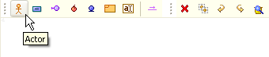
FIgura 1. Botón de creación de actor
La configuración del actor es similar a la de un objeto. Permite asignarle un nombre y una clase de la cual toma las propiedades. Para asignarle una clase preexistente o agregarle atributos y operaciones al actor es necesario que al menos un diagrama de clases se encuentre activo en el marco de expresión.
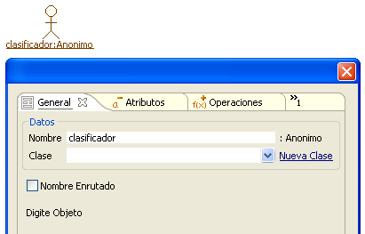
Figura 2. Atributos de creación de actor
Si se decide tomar una clase como plantilla para el objeto se deberá seleccionar cómo se debe tomar la Fuente de Características , bien sea como clase, objeto o combinado.
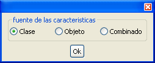
Figura 3. Fuente de características para el actor
El actor terminado instanciando de "ClaseBase", como se observa en la Figura 4.
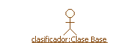
Figura 4. Representación de actor
Objeto
Los objetos son instancias de clases que en algún momento interactúan en la solución particular que el diagrama pretende modelar. Para crear un objeto se debe seleccionar el icono en forma de rectángulo azul de la barra específica del marco.
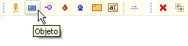
Figura 5. Creación de objeto
Los objetos tienen los mismos parámetros de creación que los actores y se pueden asociar de la misma manera a una clase, para generar un conjunto de atributos y operaciones que éste tiene y puede realizar.
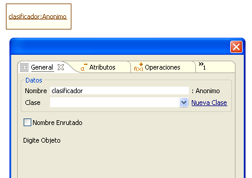
Figura 6. Datos de creación del objeto
Objeto de Interfaz
Este es un tipo especial de Objeto que se encarga generalmente de recibir los mensajes del Actor. Para crear un Objeto Interfaz se debe seleccionar el icono en forma de círculo lila unido con segmento de línea de la barra específica del marco.
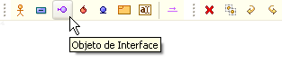
Figura 7. Creación de un objeto interface
Debido a el objeto interface es realmente un tipo de objeto, los parámetros de configuración no varían con respecto a éste. A un Objeto Interfaz se le puede asociar una clase (como Clase, Objeto o Combinado), de la cual tomara sus atributos y operaciones, o puede crearse una clase nueva para contener estas propiedades.
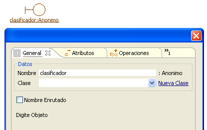
Figura 8. Datos para creación del objeto interface
Objeto de Control
El Objeto de Control es un tipo particular de Objeto que sirve como mediador entre los Objetos de Interfaz y los demás objetos. Para crear un Objeto de Control se debe seleccionar el icono en forma de círculo rojo de la barra específica del marco.
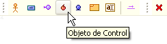
Figura 9. Creación de objeto control
Los parámetros para crear un Objeto de Control son iguales que para los otros tipos de objetos. En el área de expresión el Objeto de Control se verá así.
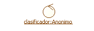
Figura 10. Representación de objeto control
Objeto de Entidad
Este tipo de objetos representan información del sistema que debe ser persistida y que puede ser consultada por acciones del actor. Para crear un objeto de comunicación se debe seleccionar el icono en forma de círculo azul con segmento de línea en la parte inferior, de la barra específica del marco.
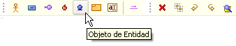
Figura 11. Creación de objeto entidad
Éste al ser un tipo de Objeto, posee los mismos parámetros de creación que los otros. El Objeto de Entidad visto sobre el diagrama es el que muestra la imagen.
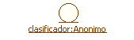
Figura 12. Representación del objeto entidad en Coloso
Transición
Las transiciones indican el paso de mensajes llevado a acabo entre un actor y los objetos, o entre los propios objetos. La transiciones son dirigidas, por lo que pueden también ser vistas como la invocación de métodos por parte del iniciador de la comunicación. Para crear una transición se debe seleccionar el icono en forma de segmento de línea con una flecha en la parte superior de la barra específica del marco.
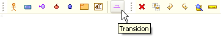
Figura 13. Creación de una transición
Posteriormente se seleccionan los dos objetos que se van a comunicar, empezando por el que inicia la comunicación. Para este caso se trata de un actor invocando un método de una interfaz.
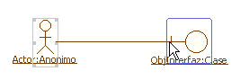
Figura 14. Conectando transición entre actor y objeto interface
Una vez seleccionadas, se procede a configurar la transición basada en las operaciones que serán invocadas. Esta pestaña es idéntica a la de operaciones de una clase en el Plugin de Clases, con la gran diferencia que los servicios no pueden ser agregados., sino que estos deben ser seleccionados que le proporciona el punto terminal de la comunicación.
En éste caso el Actor está iniciando la comunicación e invocando los métodos del ObjetoInterfaz , éste tiene a su disposición los servicios presionarBoton() y operación1().
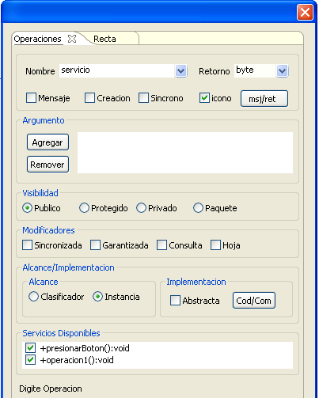
Figura 15. Datos de creación de la transición
La transiciones se pueden dar a cabo en un elemento consigo mismo, para hacerlo basta con hacer clic dos veces sobre el mismo elemento.
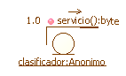
Figura 16. Transiciones al mismo objeto
Las transiciones están marcadas por un esquema de numeración que permite indicar la secuencialidad en el envio de los mensajes, dicha secuencialidad es opcional. Para modificar la numeración basta con hacer doble clic sobre el numero a modificar y digitar la nueva secuencia.
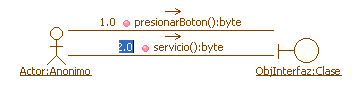
Figura 17. Esquema de numeración para la transiciones
Conversión a Diagramas de Secuencia
Una de las grandes ventajas de los Diagramas de Comunicación es que se pueden convertir en Diagramas de Secuencia. Para éste caso se convertirá el siguiente Diagrama de Comunicación a Secuencia

Figura 18. Diagrama de secuencia a convertir
Para convertir el diagrama se debe seleccionar el icono de la parte superior del marco de expresión.
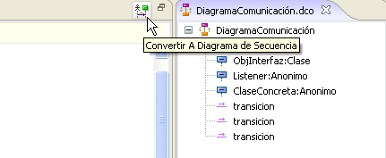
Figura 19. Botón de conversión a diagrama de secuencia
Al hacer esto se creará un diagrama con el mismo nombre dentro del proyecto, pero con la extensión propia de los Diagramas de Secuencia (.dse)
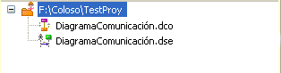
Figura 20. Diagrama de secuencia creado
La conversión realizada sobre el diagrama de la Figura 18 da como resultado el siguente Diagrama de
Secuencia que se observa en la Figura 21.
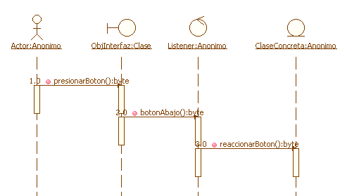
Figura 21. Diagrama de secuencia de resultado de la conversión